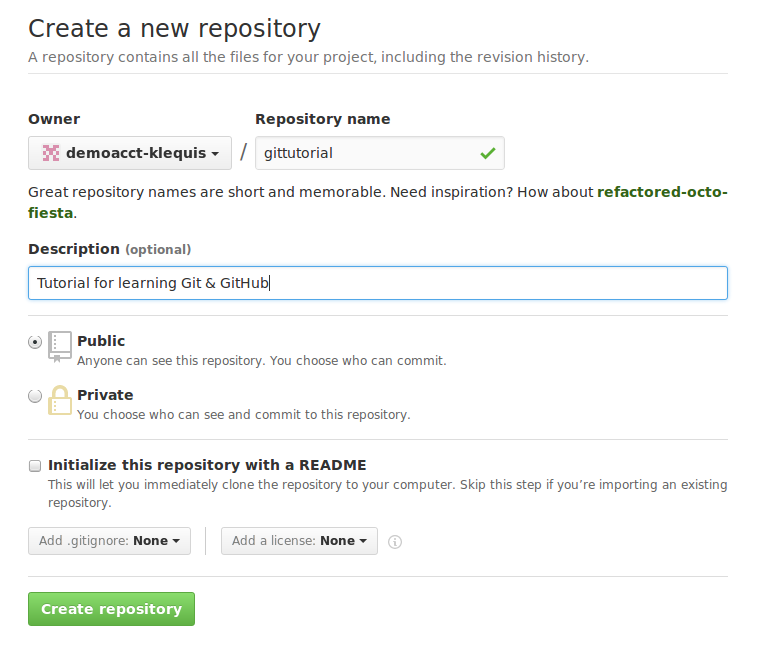
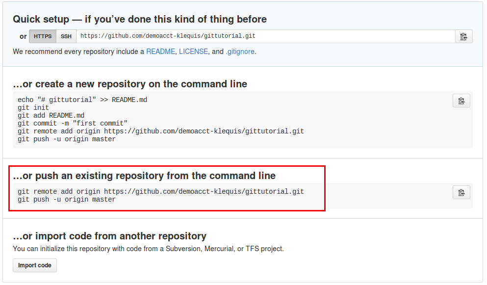
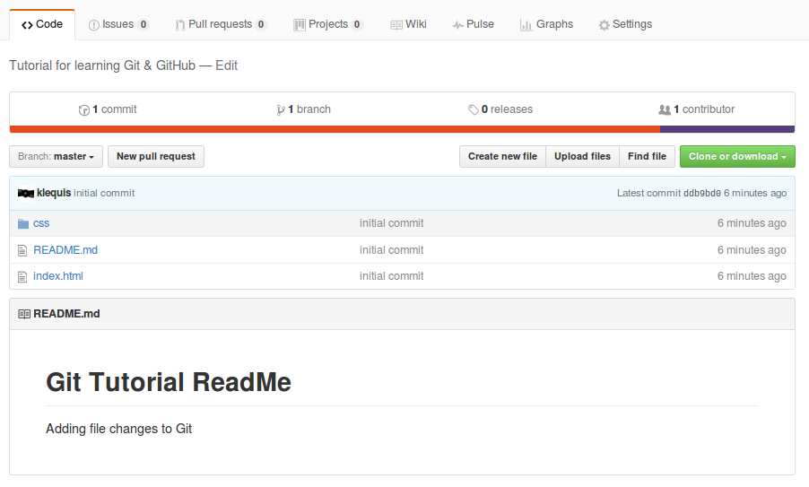

In this part of the tutorial you will setup a GitHub account, 'push' your project to a GitHub repository and learn how to keep your local repository in synch with the GitHub repository.
As shown below, you will have 2 repositories, one on your computer and another on GitHub. You will learn to move changes from your computer to GitHub. As shown, it is possible to move changes from GitHub to your local computer, which is common place when collaborating with others, but we will not cover that here.
|
Local (your computer) |
Remote (GitHub) |
||||
|
|
|||||
| = repository | |||||
Create a GitHub Account
Go to GitHub (github.com) and create an account. Give your user name some thought. GitHub is a very public place which people use to help develop their identity as a developer. You will store your code here and may in the future share it with other developers or with a potential employer to show your abilities. Once you account is setup and verified, follow the steps below to create your first repository.
Create a GitHub Repository
In the upper right-hand corner of the GitHub page, click on the '+' sign and select .

Fill out the repository details as show below and then click .
The next page will have instructions on how to use your new repository. We are going to use the information in the second section as highlighted below.
Add Your Local Repository to the GitHub Repository
$ git remote add and $ git push are explained in part 4 of this tutorial.
Using the lines from the active GitHub page, execute the commands one at a time. First:
$ git remote add origin https://github.com/your-github-accout-name/gittutorial.git
The next command will prompt you first for your GitHub user name and then for your GitHub password.
$ git push -u origin master
$ git push does what it implies. It pushes your code to GitHub.
Go back to GitHub and refresh the page. Your repository will now look like this:
Updating GitHub as you Work
Pushing to GitHub provides many benefits. Two big ones are backup and sharing.
Your work should always be backed-up regardless of how little time you spent on it. It is sometimes said that there are two kinds of people, those who have had a hard drive fail and those who will. There is also user error. Many years ago, before the days of DropBox and Google Drive, I had a hard drive fail. It was no big deal as I had a second hard drive in the machine with all the data backed-up. Unfortunately, when trying to fix the primary drive I mistakenly reformatted the wrong hard drive and lost most of the pictures from the first two years of my marriage. It is still painful to think about. Mistakes do happen. Push you code to GitHubat least once a day.
While you are learning to code you may or may not have a reason to share your code with or co-develop a project with another developer. However, once you are a developer it is more than likely you will do both of these things. Get into the habit of committing and pushing your code now.
Below is the process as we have developed it so far. It is simplistic and not adequate for managing a large project, but it is complete enough to hvae you code commited to Git and backed-up onto GitHub.
- $ git add --all
- $ git commit -m "describe the changes in the message"
- $ git push origin master
There are other ways to add, commit and push which you will learn later in this tutorial.
Congratulations! You are now using Git & GitHub.